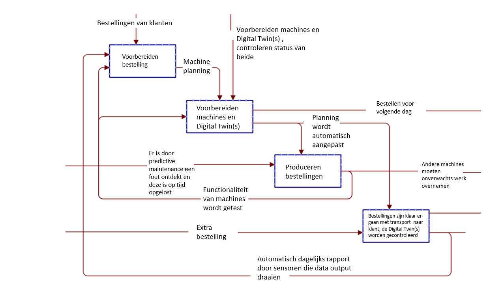

SqEME Hessing
Ik werk momenteel bij een productiebedrijf, Hessing B.V. en hier worden verschillende groenteproducten verwerkt en verpakt. Klanten bestaan uit McDonald's (grootste klant) en Jumbo.
Ik heb al vaker nagedacht over hoeveel mogelijkheden en oplossingen een Digital Twin kan bieden bij de productieprocessen van Hessing.
Vandaar dat ik heb gekozen om het proces van Hessing via een SqEME te ontwerpen en ook uiteindelijk te herontwerpen.

Het SqEME proces van Hessing laat zien dat er nogal veel onzekerheden zijn in het gehele productieproces, er gaat namelijk elke dag wel iets aan een machine kapot.
Hierdoor onstaat er vaak een gebrek aan overzicht en planning, vooral als er dan ook nog een extra bestelling van een klant bijkomt. Dan moet er rekening worden gehouden met hoe lang het gaat duren totdat de machine is gemaakt, hoe lang het daarna nog gaat duren en of er op andere productielijnen werk kan worden overgenomen.
Dit kost allemaal veel tijd die ook bespaart had kunnen blijven.
Bij Hessing zou een Digital Twin op veel gebieden problemen kunnen oplossen, vooral op het gebied van machines die stuk gaan en dat had door bijvoorbeeld predictive maintenance kunnen worden voorkomen.
In de paragraaf hieronder, is de herontworpen SqEME te zien na aanschaf van een Digital Twin.
Herontworpen SqEME
Zoals in het herontworpen proces van Hessing te zien is onder deze alinea, bestaat het productieproces uit minder onzekerheden. Dit komt doordat Digital Twins, na aanschaf, bij moeten worden gehouden en op updates moeten worden gecontroleerd. Daarnaast zal er meer mogelijk zijn met data, zoals op een andere manier rapporten draaien wat betreft productie output en ook machine functionaliteit. Machines kunnen nog kapot gaan, maar deze kans is stukken kleiner geworden aangezien er door predictive maintenance kan worden gemeten en gecontroleerd wanneer iets van de machine aan onderhoud toe is.
De kans dat het bedrijf voor elke productielijn (dit zijn er 6, op iedere staan ongeveer 4-5 machines) een Digital Twin aanschaft, is klein. Dit is dan ook de reden dat er rechts nog hetzelfde staat over een machine die onverwachts werk moet overnemen. Door een Digital Twin kan ook worden ingeschat op welke manieren er geproduceerd kan worden, hiervoor is een Twin van de fabriek echter het meest logische omdat er dan een overkoepelend overzicht van de machines en productielijnen is.
BMC Hessing (en herontworpen BMC na aanschaf Digital Twin)
Aangezien voor het (her)ontwerpen van het SqEME proces Hessing als organisatie is gekozen en het een interessant bedrijf is om de bedrijfskundige modellen op toe te passen, heb ik ook een BMC gemaakt voor en na een Digital Twin innovatie bij Hessing. Hieronder zijn beide BMC's te vinden.


Zoals te zien is, zijn er bij de onderste BMC blauwe vakjes toegevoegd. Dit zijn aspecten die na toepassing van een Digital Twin kunnen worden toegevoegd aan een BMC.
Er zou een nieuwe partner bijkomen, namelijk het bedrijf wat de Digital Twin heeft ontwikkeld en heeft geïnstalleerd. Een van de resources wordt dan ook een Digital Twin, omdat de Digital Twin bijdraagt aan het leveren van de toegevoegde waarde die dan nog verhoogt wordt.
Dit komt doordat Digital Twins bijdragen aan het beter vooruit plannen en naar alle waarschijnlijkheid zullen productielijnen ook sneller lopen en sneller klaar zijn met produceren.
Via een Digital Twin kan namelijk uiteraard ook worden gekeken naar processen, onderdelen of materiaal in de machine die verbetert kunnen worden. Alles kan dus beter voorspeld worden, hierdoor wordt de leverbetrouwbaarheid groter.
Het aantal kanalen en ook klanten zullen hierdoor kunnen toenemen, omdat Hessing klanttevredenheid op deze manier verhoogt en andere potentiële klanten ook kunnen gaan bedienen.
Uiteraard komt er wel een kostpost bij, namelijk de Digital Twin zelf en het onderhoud hiervan. De levensloop van de twin moet namelijk in de gaten worden gehouden om het beste eruit te kunnen halen. Uiteindelijke winst kan niet in een exact getal of in een exacte term worden uitgedrukt, maar aangezien er veel tijd en extra onderhoudskosten worden bespaard, zal dit op de lange termijn zeker meer geld gaan opleveren.
Positie en extra verdienmodellen in de waardeketen
{kind=link}
Hierboven is de waardeketen te zien.
Wat daaruit duidelijk wordt, is dat Hessing veel processen zelf uitvoert in de keten. De ingaande en uitgaan logistiek wordt geregeld door medewerkers vanuit Hessing zelf, dit is dus inclusief de transport.
Uitzonderingen zijn bepaalde internationale bedrijven zoals Engeland of Denemarken, waarbij het niet reeël is dat al de logistieke processen allemaal georganiseerd en bijgehouden worden door Hessing.
Na aanschaf van Digital Twin(s) technologie, zou Hessing binnen de waardeketen meer kunnen gaan ontwikkelen bij bepaalde activiteiten, zoals dienstverlening, infrastructuur en technologische ontwikkeling.
Aangezien ze door Digital Twins beter en accurater kunnen produceren, betekent dit dat ze op hoger niveau hun klanten kunnen bedienen en misschien dus ook meer klanten kunnen bedienen. De kwaliteit van de dienstverlening gaat hiermee omhoog.
De infrastructuur zal beter worden ingericht, omdat er een concreter beeld is van welke machine meer werk kan overnemen als een andere kapot gaat. Vanzelfsprekend is er meer aandacht gevestigd op technologische ontwikkeling door de integratie van de Digital Twin binnen het bedrijf.
Hierdoor gaat de interesse en aandacht in andere technologische innovaties wellicht ook groeien, omdat ze het positieve effect zien van de Digital Twin. Op die manier zal Hessing zich dan blijven ontwikkelen op technologisch gebied, wat automatisch ook weer positieve effecten zal hebben op de rest van de keten.
Een extra verdienmodel dat uit de keten herleid kan worden, is bijvoorbeeld een exponentiële organisatie worden.
Exponentiële organisaties houden zich steeds meer bezig met innoveren op het gebied van technologie en hierdoor routine werk schaalbaar maken en ook verbeteren.
Als er data vanuit de Digital Twin verzameld wordt, kunnen er in de loop van tijd ook algoritmes worden opgesteld. Door die algoritmes kan worden gemeten wat de piekdagen/weken zijn van Hessing en zo kan hier rekening mee worden gehouden.
Hessing kan bijvoorbeeld aan klanten vragen of ze al eerder willen bestellen, zodat deze alvast voorbereid kan worden.
Nog een divers verdienmodel wat toegepast zou kunnen worden, is het abonnementsmodel. Door de Digital Twin(s) zal de productie een stuk stabieler plaatsvinden en kan er vanaf het begin worden geanticipeerd hoe lang de productie nog zal duren.
Omdat er met meer efficiëntie geproduceerd kan worden, kan een abonnement worden afgesloten tussen Hessing en de klant. Vooral bij de kleinere klanten zoals lokale cateringbedrijven of supermarkten is een abonnement een geschikte oplossing.
Dit soort klanten hebben namelijk niet het hele jaar door producten nodig, maar wel tijdens bepaalde periodes. Door een abonnement af te sluiten, kan er nóg beter rekening worden gehouden met de hoeveelheid productie en vooral als er onverwachts door andere grotere klanten producten worden bijbesteld.
Business Model Canvas TNO